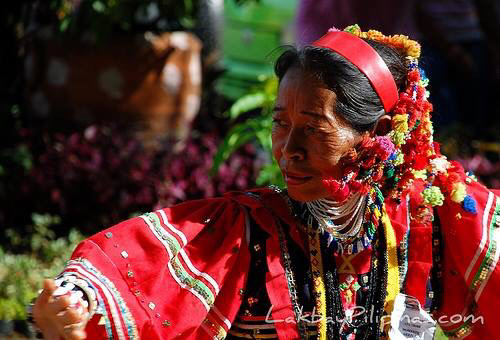

Museum of
MANDAYA
The Mandaya are an indigenous group found mainly in Davao Oriental and Compostela Valley in Mindanao. Their name means "first people upstream or in the upland." They are known for their deep connection to nature, spiritual traditions, and strong sense of community. The Mandaya practice a mix of animism and Christianity, honoring spirits of the land and ancestors through rituals, dances, and chants.
Culture & Tradition

ARTISTIC HERITAGE
Mandaya culture is rich in artistic expression from weaving dagmay cloth using abaca fibers, to crafting jewelry from beads, brass, and shells. Their music and dance celebrate harvests, healing, and community harmony. Traditional weapons like the kampilan and bolo are symbols of bravery and heritage.
ATTIRE & WEAVING
The Mandaya wear beautifully handwoven dagmay garments dyed with natural pigments. Women often adorn themselves with layered beads, brass accessories, and embroidered sashes, while men wear red or black woven vests and headbands that represent courage and tribal identity. The intricate patterns in their textiles often depict nature, ancestral symbols, and spiritual beliefs, with each design carrying deep cultural significance passed down through generations.
Beliefs & Spirituality
Sacred Traditions
The Mandaya maintain a complex belief system that combines indigenous animistic practices with Christian influences. At the core of their spirituality is the belief in various nature spirits and deities that govern different aspects of life and the environment.
Key spiritual elements include:
- Manama - The supreme deity who created the world and humanity
- Diwata - Nature spirits that inhabit trees, rivers, and mountains
- Pagdiwata - Ritual offerings and ceremonies to honor spirits
- Baylan - Spiritual leaders and healers who mediate between the physical and spiritual worlds
- Pamuhat - Healing rituals performed during illness or misfortune
These practices are performed during significant life events, agricultural cycles, and community celebrations, reinforcing their connection to nature and ancestors.
Livelihood & Sustenance
🌾 Agriculture
The Mandaya are primarily farmers, cultivating rice, corn, sweet potatoes, and root crops using traditional farming methods. They practice kaingin (slash-and-burn agriculture) and terrace farming in mountainous areas.
🎨 Weaving
Abaca fiber weaving is a cornerstone of Mandaya culture. Women create intricate dagmay textiles that are highly valued for their artistic beauty and cultural significance, often sold as a source of income.
🌳 Gathering
The Mandaya gather forest products such as rattan, wild fruits, medicinal plants, and honey. These resources supplement their diet and provide materials for crafts and traditional medicine.
Language & Communication
The Mandaya speak the Mandaya language, which belongs to the Mansakan subgroup of Philippine languages. Their language is rich with words describing their environment, cultural practices, and social relationships. Oral tradition plays a vital role in preserving their history, with elders passing down stories, myths, and knowledge through epic chants called dagmay and kalangan.
Today, many Mandaya also speak Cebuano and Filipino, allowing them to communicate with neighboring communities while maintaining their native tongue within their own settlements.
Music & Instruments
Music is integral to Mandaya life, accompanying rituals, celebrations, and daily activities. Their traditional instruments produce melodious sounds that connect them to their ancestors and the natural world.
Kudyapi
A two-stringed lute made from wood, producing soulful melodies used in courtship and storytelling.
Gimbal
A drum made from hollowed wood and animal skin, used to set rhythms during dances and ceremonies.
Agung
Large hanging gongs that produce deep, resonant tones for ceremonial occasions.
Kulintang
A set of graduated gongs arranged horizontally, creating intricate musical patterns.